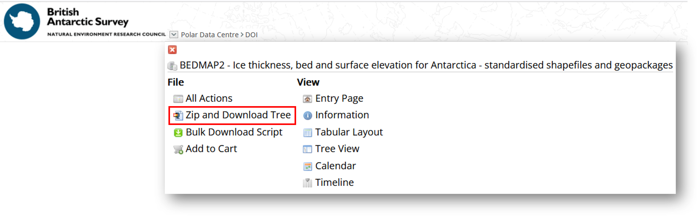
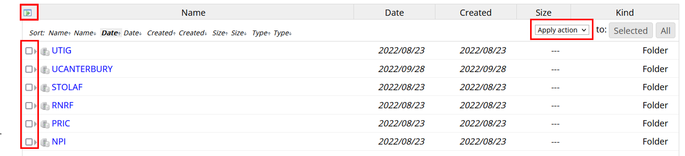

Downloading the Bedmap data¶
This Jupyter Notebook shows how to download the Bedmap products either via Ramadda or programmatically.
List of data available for download¶
The complete list of data available as part of Bedmap is available here: https://antarctica.github.io/PDC_GeophysicsBook/BEDMAP/data_available.html
The Bedmap CSV files are available for download from the UK Polar data Centre:
BEDMAP1 CSV: https://doi.org/10.5285/f64815ec-4077-4432-9f55-0ce230f46029
BEDMAP2 CSV: https://doi.org/10.5285/2fd95199-365e-4da1-ae26-3b6d48b3e6ac
BEDMAP3 CSV: https://doi.org/10.5285/91523ff9-d621-46b3-87f7-ffb6efcd1847
The Bedmap shapefiles/geopackages points and lines data are also available from the UK Polar Data Centre:
Bedmap1 statistically-summarised data points (shapefiles): https://doi.org/10.5285/925AC4EC-2A9D-461A-BFAA-6314EB0888C8
Bedmap2 statistically-summarised data points (shapefiles): https://doi.org/10.5285/0F90D926-99CE-43C9-B536-0C7791D1728B
Bedmap3 statistically-summarised data points (shapefiles): https://doi.org/10.5285/A72A50C6-A829-4E12-9F9A-5A683A1ACC4A
Downloading the data via the Ramadda interface¶
From the metadata page accessible via the DOI, it is possible to access the data by clicking on ‘GET DATA’. You will then be redirected to our Ramadda repository.
From the interface, it is possible to download the data individually by clicking on the dataset you want to download. It is also possible to zip and download the data together by clickng at the top of the ramadda interface on the down arrow next to “Polar Data Centre > DOI” and Zip and Download Tree:

Rammadda also allows to select the files you want to download: you will need to click on the little icon at the top left corner of the table containing the list of data to download, select the list of data you want to download and Apply the action you want from the drop down list:

/!\ The feature to zip and download all the datasets does not work for Bedmap3 due to the size. We are working at the PDC to make this feature available again.¶
Downloading the data via wget command¶
Please find below the different command to download the Bedmap datasets:
Downloading Bedmap1 CSV and shapepoints:
Downloading Bedmap2 CSV and shapepoints:
Downloading Bedmap3 CSV and shapefiles:
Due to the size of the dataset and limitations on Ramadda (that we are trying to resolve), it is not possible to download the dataset with a single URL. You will need to download the following file containing the list of files to download: Bedmap3_csv_list.txt and run:
wget -i Bedmap3_csv_list.txt
The same applies for the shapepoints and lines, you will need to download the following file: Bedmap3_shapefiles_gpkg_list.txt and run:
wget -i Bedmap3_shapefiles_gpkg_list.txt
Downloading the data with python¶
import os
import requests
from bs4 import BeautifulSoup
First we will show how to download the CSV data and then the statistically-summarised points.
Downloading the CSV files¶
To download the CSV file, you will need the doi of the data you want to downlolad:
The BEDMAP CSV files are available for download from the UK Polar data Centre:
BEDMAP1 CSV: https://doi.org/10.5285/f64815ec-4077-4432-9f55-0ce230f46029
BEDMAP2 CSV: https://doi.org/10.5285/2fd95199-365e-4da1-ae26-3b6d48b3e6ac
BEDMAP3 CSV: https://doi.org/10.5285/91523ff9-d621-46b3-87f7-ffb6efcd1847
We present here how the data from Bedmap3 can be downloaded:
#1. Enter the doi of the data you want to download in the box below:
doi = 'https://doi.org/10.5285/91523ff9-d621-46b3-87f7-ffb6efcd1847'
data_link = 'https://ramadda.data.bas.ac.uk/repository/entry/show?entryid=' + doi.split('/')[-1]
reqs = requests.get(data_link)
soup = BeautifulSoup(reqs.text, 'html.parser')
urls = []
for link in soup.find_all('a'):
urls.append(link.get('href'))
The list of URLs corresponding to the data download is obtained as follows:
url_to_download = [x for x in urls if x.startswith('/repository/entry/get/')]
url_to_download = ['https://ramadda.data.bas.ac.uk' + x for x in url_to_download]
print('\n'.join(url_to_download))
https://ramadda.data.bas.ac.uk/repository/entry/get/UWASHINGTON_2018_South-Pole-Lake_GRN_BM3.csv?entryid=synth%3A91523ff9-d621-46b3-87f7-ffb6efcd1847%3AL1VXQVNISU5HVE9OXzIwMThfU291dGgtUG9sZS1MYWtlX0dSTl9CTTMuY3N2
https://ramadda.data.bas.ac.uk/repository/entry/get/UTIG_2016_OLDICE_AIR_BM3.csv?entryid=synth%3A91523ff9-d621-46b3-87f7-ffb6efcd1847%3AL1VUSUdfMjAxNl9PTERJQ0VfQUlSX0JNMy5jc3Y%3D
https://ramadda.data.bas.ac.uk/repository/entry/get/UTIG_2015_EAGLE_AIR_BM3.csv?entryid=synth%3A91523ff9-d621-46b3-87f7-ffb6efcd1847%3AL1VUSUdfMjAxNV9FQUdMRV9BSVJfQk0zLmNzdg%3D%3D
https://ramadda.data.bas.ac.uk/repository/entry/get/UTIG_2013_GIMBLE_AIR_BM3.csv?entryid=synth%3A91523ff9-d621-46b3-87f7-ffb6efcd1847%3AL1VUSUdfMjAxM19HSU1CTEVfQUlSX0JNMy5jc3Y%3D
https://ramadda.data.bas.ac.uk/repository/entry/get/UTIG_2010_ICECAP_AIR_BM3.csv?entryid=synth%3A91523ff9-d621-46b3-87f7-ffb6efcd1847%3AL1VUSUdfMjAxMF9JQ0VDQVBfQUlSX0JNMy5jc3Y%3D
https://ramadda.data.bas.ac.uk/repository/entry/get/UTIG_2009_Darwin-Hatherton_AIR_BM3.csv?entryid=synth%3A91523ff9-d621-46b3-87f7-ffb6efcd1847%3AL1VUSUdfMjAwOV9EYXJ3aW4tSGF0aGVydG9uX0FJUl9CTTMuY3N2
https://ramadda.data.bas.ac.uk/repository/entry/get/ULB_2012_ICECON_GRN_BM3.csv?entryid=synth%3A91523ff9-d621-46b3-87f7-ffb6efcd1847%3AL1VMQl8yMDEyX0lDRUNPTl9HUk5fQk0zLmNzdg%3D%3D
https://ramadda.data.bas.ac.uk/repository/entry/get/ULB_2012_BEWISE_GRN_BM3.csv?entryid=synth%3A91523ff9-d621-46b3-87f7-ffb6efcd1847%3AL1VMQl8yMDEyX0JFV0lTRV9HUk5fQk0zLmNzdg%3D%3D
https://ramadda.data.bas.ac.uk/repository/entry/get/STANFORD_1971_SPRI-NSF-TUD_AIR_BM3.csv?entryid=synth%3A91523ff9-d621-46b3-87f7-ffb6efcd1847%3AL1NUQU5GT1JEXzE5NzFfU1BSSS1OU0YtVFVEX0FJUl9CTTMuY3N2
https://ramadda.data.bas.ac.uk/repository/entry/get/RNRF_2019_RAE_AIR_BM3.csv?entryid=synth%3A91523ff9-d621-46b3-87f7-ffb6efcd1847%3AL1JOUkZfMjAxOV9SQUVfQUlSX0JNMy5jc3Y%3D
https://ramadda.data.bas.ac.uk/repository/entry/get/RNRF_2018_RAE_AIR_BM3.csv?entryid=synth%3A91523ff9-d621-46b3-87f7-ffb6efcd1847%3AL1JOUkZfMjAxOF9SQUVfQUlSX0JNMy5jc3Y%3D
https://ramadda.data.bas.ac.uk/repository/entry/get/RNRF_2017_RAE_AIR_BM3.csv?entryid=synth%3A91523ff9-d621-46b3-87f7-ffb6efcd1847%3AL1JOUkZfMjAxN19SQUVfQUlSX0JNMy5jc3Y%3D
https://ramadda.data.bas.ac.uk/repository/entry/get/RNRF_2016_RAE_AIR_BM3.csv?entryid=synth%3A91523ff9-d621-46b3-87f7-ffb6efcd1847%3AL1JOUkZfMjAxNl9SQUVfQUlSX0JNMy5jc3Y%3D
https://ramadda.data.bas.ac.uk/repository/entry/get/RNRF_2015_RAE_AIR_BM3.csv?entryid=synth%3A91523ff9-d621-46b3-87f7-ffb6efcd1847%3AL1JOUkZfMjAxNV9SQUVfQUlSX0JNMy5jc3Y%3D
https://ramadda.data.bas.ac.uk/repository/entry/get/RNRF_2014_RAE_AIR_BM3.csv?entryid=synth%3A91523ff9-d621-46b3-87f7-ffb6efcd1847%3AL1JOUkZfMjAxNF9SQUVfQUlSX0JNMy5jc3Y%3D
https://ramadda.data.bas.ac.uk/repository/entry/get/RNRF_2013_RAE_AIR_BM3.csv?entryid=synth%3A91523ff9-d621-46b3-87f7-ffb6efcd1847%3AL1JOUkZfMjAxM19SQUVfQUlSX0JNMy5jc3Y%3D
https://ramadda.data.bas.ac.uk/repository/entry/get/RNRF_2011_RAE_AIR_BM3.csv?entryid=synth%3A91523ff9-d621-46b3-87f7-ffb6efcd1847%3AL1JOUkZfMjAxMV9SQUVfQUlSX0JNMy5jc3Y%3D
https://ramadda.data.bas.ac.uk/repository/entry/get/RNRF_2010_RAE_AIR_BM3.csv?entryid=synth%3A91523ff9-d621-46b3-87f7-ffb6efcd1847%3AL1JOUkZfMjAxMF9SQUVfQUlSX0JNMy5jc3Y%3D
https://ramadda.data.bas.ac.uk/repository/entry/get/RNRF_2009_RAEap5_AIR_BM3.csv?entryid=synth%3A91523ff9-d621-46b3-87f7-ffb6efcd1847%3AL1JOUkZfMjAwOV9SQUVhcDVfQUlSX0JNMy5jc3Y%3D
https://ramadda.data.bas.ac.uk/repository/entry/get/RNRF_2008_AMSap5_AIR_BM3.csv?entryid=synth%3A91523ff9-d621-46b3-87f7-ffb6efcd1847%3AL1JOUkZfMjAwOF9BTVNhcDVfQUlSX0JNMy5jc3Y%3D
https://ramadda.data.bas.ac.uk/repository/entry/get/RNRF_2007_AMSap5_AIR_BM3.csv?entryid=synth%3A91523ff9-d621-46b3-87f7-ffb6efcd1847%3AL1JOUkZfMjAwN19BTVNhcDVfQUlSX0JNMy5jc3Y%3D
https://ramadda.data.bas.ac.uk/repository/entry/get/RNRF_2006_RAEap5_AIR_BM3.csv?entryid=synth%3A91523ff9-d621-46b3-87f7-ffb6efcd1847%3AL1JOUkZfMjAwNl9SQUVhcDVfQUlSX0JNMy5jc3Y%3D
https://ramadda.data.bas.ac.uk/repository/entry/get/RNRF_2006_Komsom-Vostok_AIR_BM3.csv?entryid=synth%3A91523ff9-d621-46b3-87f7-ffb6efcd1847%3AL1JOUkZfMjAwNl9Lb21zb20tVm9zdG9rX0FJUl9CTTMuY3N2
https://ramadda.data.bas.ac.uk/repository/entry/get/RNRF_2005_AMSap5_AIR_BM3.csv?entryid=synth%3A91523ff9-d621-46b3-87f7-ffb6efcd1847%3AL1JOUkZfMjAwNV9BTVNhcDVfQUlSX0JNMy5jc3Y%3D
https://ramadda.data.bas.ac.uk/repository/entry/get/RNRF_2004_Mirny-Vostok_AIR_BM3.csv?entryid=synth%3A91523ff9-d621-46b3-87f7-ffb6efcd1847%3AL1JOUkZfMjAwNF9NaXJueS1Wb3N0b2tfQUlSX0JNMy5jc3Y%3D
https://ramadda.data.bas.ac.uk/repository/entry/get/RNRF_2004_AMSap5_AIR_BM3.csv?entryid=synth%3A91523ff9-d621-46b3-87f7-ffb6efcd1847%3AL1JOUkZfMjAwNF9BTVNhcDVfQUlSX0JNMy5jc3Y%3D
https://ramadda.data.bas.ac.uk/repository/entry/get/RNRF_2003_AMSap5_AIR_BM3.csv?entryid=synth%3A91523ff9-d621-46b3-87f7-ffb6efcd1847%3AL1JOUkZfMjAwM19BTVNhcDVfQUlSX0JNMy5jc3Y%3D
https://ramadda.data.bas.ac.uk/repository/entry/get/RNRF_1975_Lazarev_SEI_BM3.csv?entryid=synth%3A91523ff9-d621-46b3-87f7-ffb6efcd1847%3AL1JOUkZfMTk3NV9MYXphcmV2X1NFSV9CTTMuY3N2
https://ramadda.data.bas.ac.uk/repository/entry/get/RNRF_1975_Filchner-Ronne_SEI_BM3.csv?entryid=synth%3A91523ff9-d621-46b3-87f7-ffb6efcd1847%3AL1JOUkZfMTk3NV9GaWxjaG5lci1Sb25uZV9TRUlfQk0zLmNzdg%3D%3D
https://ramadda.data.bas.ac.uk/repository/entry/get/RNRF_1971_Lambert-Amery_SEI_BM3.csv?entryid=synth%3A91523ff9-d621-46b3-87f7-ffb6efcd1847%3AL1JOUkZfMTk3MV9MYW1iZXJ0LUFtZXJ5X1NFSV9CTTMuY3N2
https://ramadda.data.bas.ac.uk/repository/entry/get/PRIC_2018_CHA4_AIR_BM3.csv?entryid=synth%3A91523ff9-d621-46b3-87f7-ffb6efcd1847%3AL1BSSUNfMjAxOF9DSEE0X0FJUl9CTTMuY3N2
https://ramadda.data.bas.ac.uk/repository/entry/get/PRIC_2017_CHA3_AIR_BM3.csv?entryid=synth%3A91523ff9-d621-46b3-87f7-ffb6efcd1847%3AL1BSSUNfMjAxN19DSEEzX0FJUl9CTTMuY3N2
https://ramadda.data.bas.ac.uk/repository/entry/get/PRIC_2016_CHA2_AIR_BM3.csv?entryid=synth%3A91523ff9-d621-46b3-87f7-ffb6efcd1847%3AL1BSSUNfMjAxNl9DSEEyX0FJUl9CTTMuY3N2
https://ramadda.data.bas.ac.uk/repository/entry/get/PRIC_2015_CHA1_AIR_BM3.csv?entryid=synth%3A91523ff9-d621-46b3-87f7-ffb6efcd1847%3AL1BSSUNfMjAxNV9DSEExX0FJUl9CTTMuY3N2
https://ramadda.data.bas.ac.uk/repository/entry/get/NPI_2016_MADICE_GRN_BM3.csv?entryid=synth%3A91523ff9-d621-46b3-87f7-ffb6efcd1847%3AL05QSV8yMDE2X01BRElDRV9HUk5fQk0zLmNzdg%3D%3D
https://ramadda.data.bas.ac.uk/repository/entry/get/NPI_2015_POLARGAP_AIR_BM3.csv?entryid=synth%3A91523ff9-d621-46b3-87f7-ffb6efcd1847%3AL05QSV8yMDE1X1BPTEFSR0FQX0FJUl9CTTMuY3N2
https://ramadda.data.bas.ac.uk/repository/entry/get/NPI_2012_ICERISES_GRN_BM3.csv?entryid=synth%3A91523ff9-d621-46b3-87f7-ffb6efcd1847%3AL05QSV8yMDEyX0lDRVJJU0VTX0dSTl9CTTMuY3N2
https://ramadda.data.bas.ac.uk/repository/entry/get/NIPR_2018_JARE60_GRN_BM3.csv?entryid=synth%3A91523ff9-d621-46b3-87f7-ffb6efcd1847%3AL05JUFJfMjAxOF9KQVJFNjBfR1JOX0JNMy5jc3Y%3D
https://ramadda.data.bas.ac.uk/repository/entry/get/NIPR_2017_JARE59_GRN_BM3.csv?entryid=synth%3A91523ff9-d621-46b3-87f7-ffb6efcd1847%3AL05JUFJfMjAxN19KQVJFNTlfR1JOX0JNMy5jc3Y%3D
https://ramadda.data.bas.ac.uk/repository/entry/get/NIPR_2012_JARE54_GRN_BM3.csv?entryid=synth%3A91523ff9-d621-46b3-87f7-ffb6efcd1847%3AL05JUFJfMjAxMl9KQVJFNTRfR1JOX0JNMy5jc3Y%3D
https://ramadda.data.bas.ac.uk/repository/entry/get/NIPR_2007_JASE_GRN_BM3.csv?entryid=synth%3A91523ff9-d621-46b3-87f7-ffb6efcd1847%3AL05JUFJfMjAwN19KQVNFX0dSTl9CTTMuY3N2
https://ramadda.data.bas.ac.uk/repository/entry/get/NIPR_2007_JARE49_GRN_BM3.csv?entryid=synth%3A91523ff9-d621-46b3-87f7-ffb6efcd1847%3AL05JUFJfMjAwN19KQVJFNDlfR1JOX0JNMy5jc3Y%3D
https://ramadda.data.bas.ac.uk/repository/entry/get/NIPR_1999_JARE40_GRN_BM3.csv?entryid=synth%3A91523ff9-d621-46b3-87f7-ffb6efcd1847%3AL05JUFJfMTk5OV9KQVJFNDBfR1JOX0JNMy5jc3Y%3D
https://ramadda.data.bas.ac.uk/repository/entry/get/NIPR_1996_JARE37_GRN_BM3.csv?entryid=synth%3A91523ff9-d621-46b3-87f7-ffb6efcd1847%3AL05JUFJfMTk5Nl9KQVJFMzdfR1JOX0JNMy5jc3Y%3D
https://ramadda.data.bas.ac.uk/repository/entry/get/NIPR_1992_JARE33_GRN_BM3.csv?entryid=synth%3A91523ff9-d621-46b3-87f7-ffb6efcd1847%3AL05JUFJfMTk5Ml9KQVJFMzNfR1JOX0JNMy5jc3Y%3D
https://ramadda.data.bas.ac.uk/repository/entry/get/NASA_2019_ICEBRIDGE_AIR_BM3.csv?entryid=synth%3A91523ff9-d621-46b3-87f7-ffb6efcd1847%3AL05BU0FfMjAxOV9JQ0VCUklER0VfQUlSX0JNMy5jc3Y%3D
https://ramadda.data.bas.ac.uk/repository/entry/get/NASA_2018_ICEBRIDGE_AIR_BM3.csv?entryid=synth%3A91523ff9-d621-46b3-87f7-ffb6efcd1847%3AL05BU0FfMjAxOF9JQ0VCUklER0VfQUlSX0JNMy5jc3Y%3D
https://ramadda.data.bas.ac.uk/repository/entry/get/NASA_2017_ICEBRIDGE_AIR_BM3.csv?entryid=synth%3A91523ff9-d621-46b3-87f7-ffb6efcd1847%3AL05BU0FfMjAxN19JQ0VCUklER0VfQUlSX0JNMy5jc3Y%3D
https://ramadda.data.bas.ac.uk/repository/entry/get/NASA_2016_ICEBRIDGE_AIR_BM3.csv?entryid=synth%3A91523ff9-d621-46b3-87f7-ffb6efcd1847%3AL05BU0FfMjAxNl9JQ0VCUklER0VfQUlSX0JNMy5jc3Y%3D
https://ramadda.data.bas.ac.uk/repository/entry/get/NASA_2014_ICEBRIDGE_AIR_BM3.csv?entryid=synth%3A91523ff9-d621-46b3-87f7-ffb6efcd1847%3AL05BU0FfMjAxNF9JQ0VCUklER0VfQUlSX0JNMy5jc3Y%3D
https://ramadda.data.bas.ac.uk/repository/entry/get/NASA_2013_ICEBRIDGE_AIR_BM3.csv?entryid=synth%3A91523ff9-d621-46b3-87f7-ffb6efcd1847%3AL05BU0FfMjAxM19JQ0VCUklER0VfQUlSX0JNMy5jc3Y%3D
https://ramadda.data.bas.ac.uk/repository/entry/get/LDEO_2015_ROSETTA_AIR_BM3.csv?entryid=synth%3A91523ff9-d621-46b3-87f7-ffb6efcd1847%3AL0xERU9fMjAxNV9ST1NFVFRBX0FJUl9CTTMuY3N2
https://ramadda.data.bas.ac.uk/repository/entry/get/KOPRI_2018_KRT2_AIR_BM3.csv?entryid=synth%3A91523ff9-d621-46b3-87f7-ffb6efcd1847%3AL0tPUFJJXzIwMThfS1JUMl9BSVJfQk0zLmNzdg%3D%3D
https://ramadda.data.bas.ac.uk/repository/entry/get/KOPRI_2017_KRT1_AIR_BM3.csv?entryid=synth%3A91523ff9-d621-46b3-87f7-ffb6efcd1847%3AL0tPUFJJXzIwMTdfS1JUMV9BSVJfQk0zLmNzdg%3D%3D
https://ramadda.data.bas.ac.uk/repository/entry/get/INGV_2003_Talos-Dome_AIR_BM3.csv?entryid=synth%3A91523ff9-d621-46b3-87f7-ffb6efcd1847%3AL0lOR1ZfMjAwM19UYWxvcy1Eb21lX0FJUl9CTTMuY3N2
https://ramadda.data.bas.ac.uk/repository/entry/get/INGV_2001_Talos-Dome_AIR_BM3.csv?entryid=synth%3A91523ff9-d621-46b3-87f7-ffb6efcd1847%3AL0lOR1ZfMjAwMV9UYWxvcy1Eb21lX0FJUl9CTTMuY3N2
https://ramadda.data.bas.ac.uk/repository/entry/get/INGV_1999_Talos-Dome_AIR_BM3.csv?entryid=synth%3A91523ff9-d621-46b3-87f7-ffb6efcd1847%3AL0lOR1ZfMTk5OV9UYWxvcy1Eb21lX0FJUl9CTTMuY3N2
https://ramadda.data.bas.ac.uk/repository/entry/get/INGV_1997_Talos-Dome_AIR_BM3.csv?entryid=synth%3A91523ff9-d621-46b3-87f7-ffb6efcd1847%3AL0lOR1ZfMTk5N19UYWxvcy1Eb21lX0FJUl9CTTMuY3N2
https://ramadda.data.bas.ac.uk/repository/entry/get/CRESIS_2013_Siple-Coast_AIR_BM3.csv?entryid=synth%3A91523ff9-d621-46b3-87f7-ffb6efcd1847%3AL0NSRVNJU18yMDEzX1NpcGxlLUNvYXN0X0FJUl9CTTMuY3N2
https://ramadda.data.bas.ac.uk/repository/entry/get/CRESIS_2009_Thwaites_AIR_BM3.csv?entryid=synth%3A91523ff9-d621-46b3-87f7-ffb6efcd1847%3AL0NSRVNJU18yMDA5X1Rod2FpdGVzX0FJUl9CTTMuY3N2
https://ramadda.data.bas.ac.uk/repository/entry/get/CRESIS_2009_AntarcticaTO_AIR_BM3.csv?entryid=synth%3A91523ff9-d621-46b3-87f7-ffb6efcd1847%3AL0NSRVNJU18yMDA5X0FudGFyY3RpY2FUT19BSVJfQk0zLmNzdg%3D%3D
https://ramadda.data.bas.ac.uk/repository/entry/get/CECS_2006_Subglacial-Lake-CECs_GRN_BM3.csv?entryid=synth%3A91523ff9-d621-46b3-87f7-ffb6efcd1847%3AL0NFQ1NfMjAwNl9TdWJnbGFjaWFsLUxha2UtQ0VDc19HUk5fQk0zLmNzdg%3D%3D
https://ramadda.data.bas.ac.uk/repository/entry/get/BAS_2019_Thwaites_AIR_BM3.csv?entryid=synth%3A91523ff9-d621-46b3-87f7-ffb6efcd1847%3AL0JBU18yMDE5X1Rod2FpdGVzX0FJUl9CTTMuY3N2
https://ramadda.data.bas.ac.uk/repository/entry/get/BAS_2018_Thwaites_AIR_BM3.csv?entryid=synth%3A91523ff9-d621-46b3-87f7-ffb6efcd1847%3AL0JBU18yMDE4X1Rod2FpdGVzX0FJUl9CTTMuY3N2
https://ramadda.data.bas.ac.uk/repository/entry/get/BAS_2017_English-Coast_AIR_BM3.csv?entryid=synth%3A91523ff9-d621-46b3-87f7-ffb6efcd1847%3AL0JBU18yMDE3X0VuZ2xpc2gtQ29hc3RfQUlSX0JNMy5jc3Y%3D
https://ramadda.data.bas.ac.uk/repository/entry/get/BAS_2016_FISS_AIR_BM3.csv?entryid=synth%3A91523ff9-d621-46b3-87f7-ffb6efcd1847%3AL0JBU18yMDE2X0ZJU1NfQUlSX0JNMy5jc3Y%3D
https://ramadda.data.bas.ac.uk/repository/entry/get/BAS_2015_POLARGAP_AIR_BM3.csv?entryid=synth%3A91523ff9-d621-46b3-87f7-ffb6efcd1847%3AL0JBU18yMDE1X1BPTEFSR0FQX0FJUl9CTTMuY3N2
https://ramadda.data.bas.ac.uk/repository/entry/get/BAS_2015_FISS_AIR_BM3.csv?entryid=synth%3A91523ff9-d621-46b3-87f7-ffb6efcd1847%3AL0JBU18yMDE1X0ZJU1NfQUlSX0JNMy5jc3Y%3D
https://ramadda.data.bas.ac.uk/repository/entry/get/BAS_2013_ISTAR_GRN_BM3.csv?entryid=synth%3A91523ff9-d621-46b3-87f7-ffb6efcd1847%3AL0JBU18yMDEzX0lTVEFSX0dSTl9CTTMuY3N2
https://ramadda.data.bas.ac.uk/repository/entry/get/BAS_2012_ICEGRAV_AIR_BM3.csv?entryid=synth%3A91523ff9-d621-46b3-87f7-ffb6efcd1847%3AL0JBU18yMDEyX0lDRUdSQVZfQUlSX0JNMy5jc3Y%3D
https://ramadda.data.bas.ac.uk/repository/entry/get/BAS_2012_Castle_GRN_BM3.csv?entryid=synth%3A91523ff9-d621-46b3-87f7-ffb6efcd1847%3AL0JBU18yMDEyX0Nhc3RsZV9HUk5fQk0zLmNzdg%3D%3D
https://ramadda.data.bas.ac.uk/repository/entry/get/BAS_2011_Adelaide_AIR_BM3.csv?entryid=synth%3A91523ff9-d621-46b3-87f7-ffb6efcd1847%3AL0JBU18yMDExX0FkZWxhaWRlX0FJUl9CTTMuY3N2
https://ramadda.data.bas.ac.uk/repository/entry/get/BAS_2010_IMAFI_AIR_BM3.csv?entryid=synth%3A91523ff9-d621-46b3-87f7-ffb6efcd1847%3AL0JBU18yMDEwX0lNQUZJX0FJUl9CTTMuY3N2
https://ramadda.data.bas.ac.uk/repository/entry/get/BAS_2008_Lake-Ellsworth_GRN_BM3.csv?entryid=synth%3A91523ff9-d621-46b3-87f7-ffb6efcd1847%3AL0JBU18yMDA4X0xha2UtRWxsc3dvcnRoX0dSTl9CTTMuY3N2
https://ramadda.data.bas.ac.uk/repository/entry/get/BAS_2007_Rutford_GRN_BM3.csv?entryid=synth%3A91523ff9-d621-46b3-87f7-ffb6efcd1847%3AL0JBU18yMDA3X1J1dGZvcmRfR1JOX0JNMy5jc3Y%3D
https://ramadda.data.bas.ac.uk/repository/entry/get/BAS_2007_Lake-Ellsworth_GRN_BM3.csv?entryid=synth%3A91523ff9-d621-46b3-87f7-ffb6efcd1847%3AL0JBU18yMDA3X0xha2UtRWxsc3dvcnRoX0dSTl9CTTMuY3N2
https://ramadda.data.bas.ac.uk/repository/entry/get/AWI_2019_JURAS_AIR_BM3.csv?entryid=synth%3A91523ff9-d621-46b3-87f7-ffb6efcd1847%3AL0FXSV8yMDE5X0pVUkFTX0FJUl9CTTMuY3N2
https://ramadda.data.bas.ac.uk/repository/entry/get/AWI_2018_JURAS_AIR_BM3.csv?entryid=synth%3A91523ff9-d621-46b3-87f7-ffb6efcd1847%3AL0FXSV8yMDE4X0pVUkFTX0FJUl9CTTMuY3N2
https://ramadda.data.bas.ac.uk/repository/entry/get/AWI_2018_DML-Coast_AIR_BM3.csv?entryid=synth%3A91523ff9-d621-46b3-87f7-ffb6efcd1847%3AL0FXSV8yMDE4X0RNTC1Db2FzdF9BSVJfQk0zLmNzdg%3D%3D
https://ramadda.data.bas.ac.uk/repository/entry/get/AWI_2018_ANIRES_AIR_BM3.csv?entryid=synth%3A91523ff9-d621-46b3-87f7-ffb6efcd1847%3AL0FXSV8yMDE4X0FOSVJFU19BSVJfQk0zLmNzdg%3D%3D
https://ramadda.data.bas.ac.uk/repository/entry/get/AWI_2016_OIR_AIR_BM3.csv?entryid=synth%3A91523ff9-d621-46b3-87f7-ffb6efcd1847%3AL0FXSV8yMDE2X09JUl9BSVJfQk0zLmNzdg%3D%3D
https://ramadda.data.bas.ac.uk/repository/entry/get/AWI_2015_GEA-DML_AIR_BM3.csv?entryid=synth%3A91523ff9-d621-46b3-87f7-ffb6efcd1847%3AL0FXSV8yMDE1X0dFQS1ETUxfQUlSX0JNMy5jc3Y%3D
https://ramadda.data.bas.ac.uk/repository/entry/get/AWI_2014_Recovery-Glacier_AIR_BM3.csv?entryid=synth%3A91523ff9-d621-46b3-87f7-ffb6efcd1847%3AL0FXSV8yMDE0X1JlY292ZXJ5LUdsYWNpZXJfQUlSX0JNMy5jc3Y%3D
https://ramadda.data.bas.ac.uk/repository/entry/get/AWI_2013_GEA-IV_AIR_BM3.csv?entryid=synth%3A91523ff9-d621-46b3-87f7-ffb6efcd1847%3AL0FXSV8yMDEzX0dFQS1JVl9BSVJfQk0zLmNzdg%3D%3D
The list can be used for a wget command directly. We detail below how to download the data in python:
def download(url: str, dest_folder: str):
if not os.path.exists(dest_folder):
os.makedirs(dest_folder) # create folder if it does not exist
filename = url.split('/')[-1].replace(" ", "_") # be careful with file names
filename = filename.split('.csv')[0] + '.csv'
file_path = os.path.join(dest_folder, filename)
r = requests.get(url, stream=True)
if r.ok:
print("saving to", os.path.abspath(file_path))
with open(file_path, 'wb') as f:
for chunk in r.iter_content(chunk_size=1024 * 8):
if chunk:
f.write(chunk)
f.flush()
os.fsync(f.fileno())
else: # HTTP status code 4XX/5XX
print("Download failed: status code {}\n{}".format(r.status_code, r.text))
#2. Enter the destination folder of the data (where the data will be saved) in the box below:
destination_folder = 'D:/BEDMAP/bedmap3_csv'
#To download all the data, run the following command:
for i in range(0, len(url_to_download)):
download(url_to_download[i], destination_folder)
The data are directly saved in the destination folder.
Downloading statistically-summarised data points and lines¶
To download the points and lines file, you will need the doi of the data you want to downlolad:
The BEDMAP CSV files are available for download from the UK Polar data Centre:
Bedmap1 statistically-summarised data points (shapefiles): https://doi.org/10.5285/925AC4EC-2A9D-461A-BFAA-6314EB0888C8
Bedmap2 statistically-summarised data points (shapefiles): https://doi.org/10.5285/0F90D926-99CE-43C9-B536-0C7791D1728B
Bedmap3 statistically-summarised data points (shapefiles): https://doi.org/10.5285/A72A50C6-A829-4E12-9F9A-5A683A1ACC4A
We present here how the points/lines data from Bedmap3 can be downloaded:
#1. Enter the doi of the data you want to download in the box below:
doi = 'https://doi.org/10.5285/a72a50c6-a829-4e12-9f9a-5a683a1acc4a'
data_link = 'https://ramadda.data.bas.ac.uk/repository/entry/show?entryid=' + doi.split('/')[-1]
reqs = requests.get(data_link)
soup = BeautifulSoup(reqs.text, 'html.parser')
urls = []
for link in soup.find_all('a'):
urls.append(link.get('href'))
url_to_institute_subfolders = [x for x in urls if x.startswith('/repository/entry/show?entryid=synth%') and '&' not in x]
url_to_institute_subfolders = ['https://ramadda.data.bas.ac.uk' + x for x in url_to_institute_subfolders]
url_to_institute_subfolders = list(set(url_to_institute_subfolders))
urls_institute = []
for j in range(0, len(url_to_institute_subfolders)):
reqs = requests.get(url_to_institute_subfolders[j])
soup = BeautifulSoup(reqs.text, 'html.parser')
for link in soup.find_all('a'):
urls_institute.append(link.get('href'))
urls_institute = list(set(urls_institute))
The list of URLs corresponding to the data download is obtained as follows:
url_to_download = [x for x in urls_institute if 'zip.tree' in x]
url_to_download = ['https://ramadda.data.bas.ac.uk' + x for x in url_to_download]
print('\n'.join(url_to_download))
https://ramadda.data.bas.ac.uk/repository/entry/show/Polar+Data+Centre/DOI/BEDMAP3+-+Ice+thickness%2C+bed+and+surface+elevation+for+Antarctica+-+standardised+shapefiles+and+geopackages/AWI?entryid=synth%3Aa72a50c6-a829-4e12-9f9a-5a683a1acc4a%3AL0FXSQ%3D%3D&output=zip.tree
https://ramadda.data.bas.ac.uk/repository/entry/show/Polar+Data+Centre/DOI/BEDMAP3+-+Ice+thickness%2C+bed+and+surface+elevation+for+Antarctica+-+standardised+shapefiles+and+geopackages/RNRF?entryid=synth%3Aa72a50c6-a829-4e12-9f9a-5a683a1acc4a%3AL1JOUkY%3D&output=zip.tree
https://ramadda.data.bas.ac.uk/repository/entry/show/Polar+Data+Centre/DOI/BEDMAP3+-+Ice+thickness%2C+bed+and+surface+elevation+for+Antarctica+-+standardised+shapefiles+and+geopackages/STANFORD?entryid=synth%3Aa72a50c6-a829-4e12-9f9a-5a683a1acc4a%3AL1NUQU5GT1JE&output=zip.tree
https://ramadda.data.bas.ac.uk/repository/entry/show/Polar+Data+Centre/DOI/BEDMAP3+-+Ice+thickness%2C+bed+and+surface+elevation+for+Antarctica+-+standardised+shapefiles+and+geopackages/ITARES?entryid=synth%3Aa72a50c6-a829-4e12-9f9a-5a683a1acc4a%3AL0lUQVJFUw%3D%3D&output=zip.tree
https://ramadda.data.bas.ac.uk/repository/entry/show/Polar+Data+Centre/DOI/BEDMAP3+-+Ice+thickness%2C+bed+and+surface+elevation+for+Antarctica+-+standardised+shapefiles+and+geopackages/UWASHINGTON?entryid=synth%3Aa72a50c6-a829-4e12-9f9a-5a683a1acc4a%3AL1VXQVNISU5HVE9O&output=zip.tree
https://ramadda.data.bas.ac.uk/repository/entry/show/Polar+Data+Centre/DOI/BEDMAP3+-+Ice+thickness%2C+bed+and+surface+elevation+for+Antarctica+-+standardised+shapefiles+and+geopackages/KOPRI?entryid=synth%3Aa72a50c6-a829-4e12-9f9a-5a683a1acc4a%3AL0tPUFJJ&output=zip.tree
https://ramadda.data.bas.ac.uk/repository/entry/show/Polar+Data+Centre/DOI/BEDMAP3+-+Ice+thickness%2C+bed+and+surface+elevation+for+Antarctica+-+standardised+shapefiles+and+geopackages/CECS?entryid=synth%3Aa72a50c6-a829-4e12-9f9a-5a683a1acc4a%3AL0NFQ1M%3D&output=zip.tree
https://ramadda.data.bas.ac.uk/repository/entry/show/Polar+Data+Centre/DOI/BEDMAP3+-+Ice+thickness%2C+bed+and+surface+elevation+for+Antarctica+-+standardised+shapefiles+and+geopackages/CRESIS?entryid=synth%3Aa72a50c6-a829-4e12-9f9a-5a683a1acc4a%3AL0NSRVNJUw%3D%3D&output=zip.tree
https://ramadda.data.bas.ac.uk/repository/entry/show/Polar+Data+Centre/DOI/BEDMAP3+-+Ice+thickness%2C+bed+and+surface+elevation+for+Antarctica+-+standardised+shapefiles+and+geopackages/ULB?entryid=synth%3Aa72a50c6-a829-4e12-9f9a-5a683a1acc4a%3AL1VMQg%3D%3D&output=zip.tree
https://ramadda.data.bas.ac.uk/repository/entry/show/Polar+Data+Centre/DOI/BEDMAP3+-+Ice+thickness%2C+bed+and+surface+elevation+for+Antarctica+-+standardised+shapefiles+and+geopackages/UTIG?entryid=synth%3Aa72a50c6-a829-4e12-9f9a-5a683a1acc4a%3AL1VUSUc%3D&output=zip.tree
https://ramadda.data.bas.ac.uk/repository/entry/show/Polar+Data+Centre/DOI/BEDMAP3+-+Ice+thickness%2C+bed+and+surface+elevation+for+Antarctica+-+standardised+shapefiles+and+geopackages/BAS?entryid=synth%3Aa72a50c6-a829-4e12-9f9a-5a683a1acc4a%3AL0JBUw%3D%3D&output=zip.tree
https://ramadda.data.bas.ac.uk/repository/entry/show/Polar+Data+Centre/DOI/BEDMAP3+-+Ice+thickness%2C+bed+and+surface+elevation+for+Antarctica+-+standardised+shapefiles+and+geopackages/NASA?entryid=synth%3Aa72a50c6-a829-4e12-9f9a-5a683a1acc4a%3AL05BU0E%3D&output=zip.tree
https://ramadda.data.bas.ac.uk/repository/entry/show/Polar+Data+Centre/DOI/BEDMAP3+-+Ice+thickness%2C+bed+and+surface+elevation+for+Antarctica+-+standardised+shapefiles+and+geopackages/NIPR?entryid=synth%3Aa72a50c6-a829-4e12-9f9a-5a683a1acc4a%3AL05JUFI%3D&output=zip.tree
https://ramadda.data.bas.ac.uk/repository/entry/show/Polar+Data+Centre/DOI/BEDMAP3+-+Ice+thickness%2C+bed+and+surface+elevation+for+Antarctica+-+standardised+shapefiles+and+geopackages/INGV?entryid=synth%3Aa72a50c6-a829-4e12-9f9a-5a683a1acc4a%3AL0lOR1Y%3D&output=zip.tree
https://ramadda.data.bas.ac.uk/repository/entry/show/Polar+Data+Centre/DOI/BEDMAP3+-+Ice+thickness%2C+bed+and+surface+elevation+for+Antarctica+-+standardised+shapefiles+and+geopackages/NPI?entryid=synth%3Aa72a50c6-a829-4e12-9f9a-5a683a1acc4a%3AL05QSQ%3D%3D&output=zip.tree
https://ramadda.data.bas.ac.uk/repository/entry/show/Polar+Data+Centre/DOI/BEDMAP3+-+Ice+thickness%2C+bed+and+surface+elevation+for+Antarctica+-+standardised+shapefiles+and+geopackages/PRIC?entryid=synth%3Aa72a50c6-a829-4e12-9f9a-5a683a1acc4a%3AL1BSSUM%3D&output=zip.tree
The list can be used for a wget command directly. We detail below how to download the data in python:
#2. Enter the destination folder of the data (where the data will be saved) in the box below:
destination_folder = 'D:/BEDMAP/bedmap3_points_lines'
#To download all the data, run the following command:
for i in range(0, len(url_to_download)):
download(url_to_download[i], destination_folder)